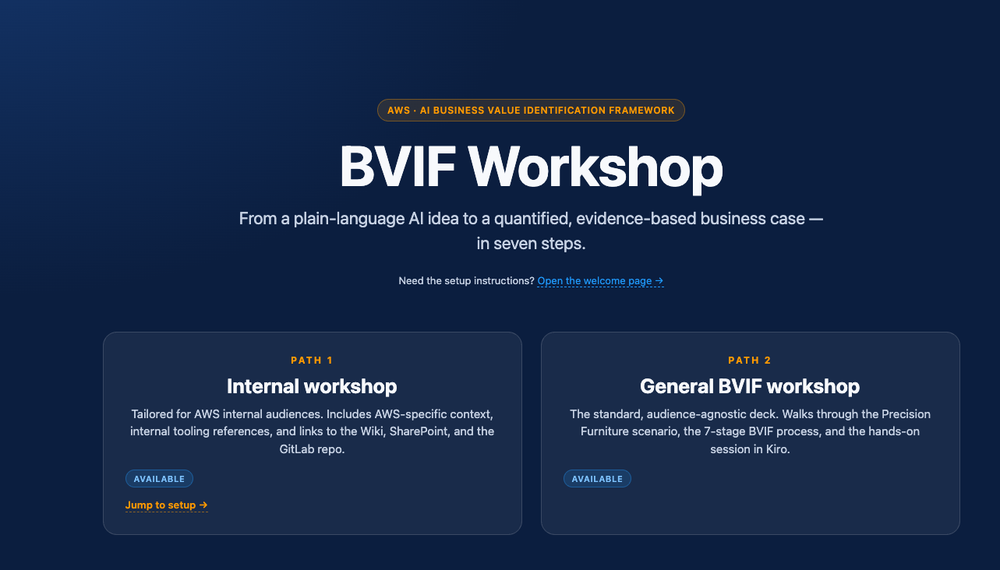
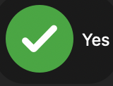

Cinco pasos rápidos antes de comenzar. Una vez que los completes, la presentación del taller se abre automáticamente.
~/workspace-bvif). Será tu espacio de trabajo durante el resto del taller.kiro_for_bvif-main) dentro de esa carpeta.kiro debe quedar directamente bajo tu carpeta de espacio de trabajo — no anidada un nivel más abajo.bvif-samples/0.workshop/index.html. Desde la ruta relativa dentro de tu carpeta de espacio de trabajo.
Verás esta página:

